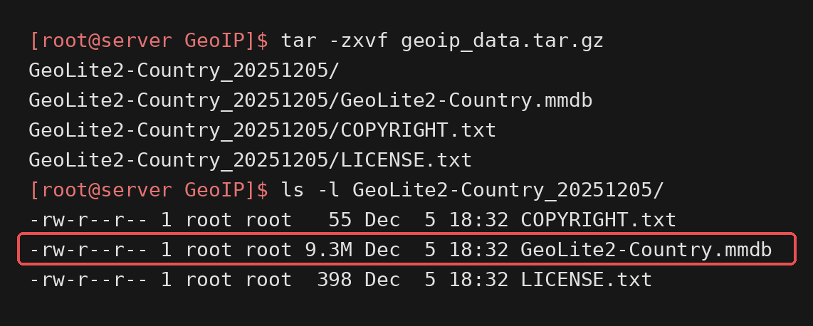
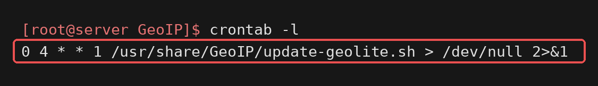
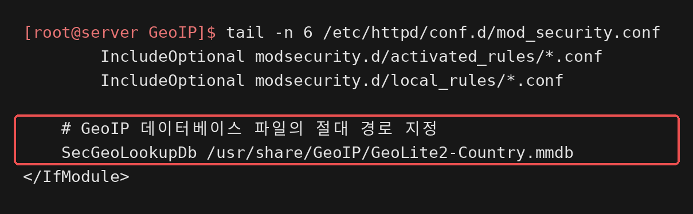
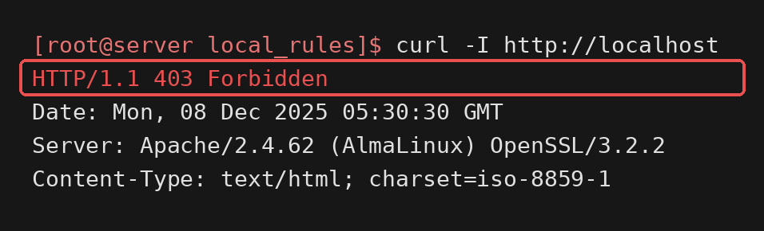
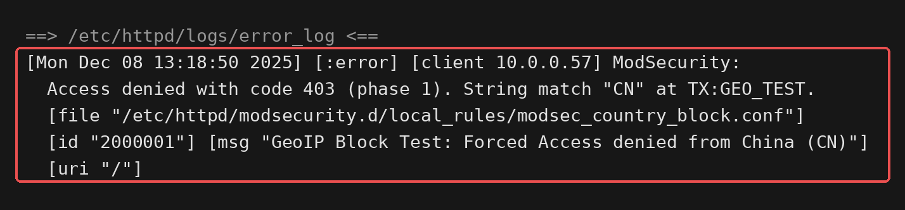
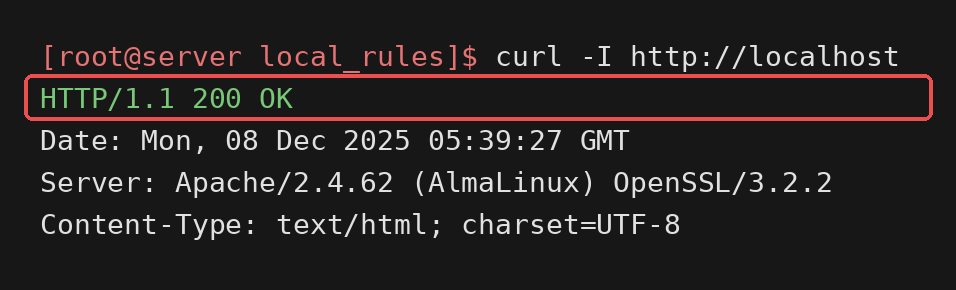

시스템 인프라 운영
GeoIP 기반 국가 접근 제어 (ModSecurity)
접속 IP의 국가 코드를 실시간으로 판별해, 국내(KR) 외 접속을 ModSecurity 정책 하나로 차단하는 구성입니다.
1. 개요
- 국가 판별: MaxMind GeoLite2 Country DB(
.mmdb)로 접속 IP의 국가 코드를 조회합니다. - 정책 적용: ModSecurity 사용자 정의 룰에서 허용·차단 국가를 지정합니다.
- 중앙화: 정책 파일 하나로 모든 가상호스트에 적용되고, 차단 기록은 ModSecurity 로그에 모입니다.
2. GeoLite2 국가 DB 준비
MaxMind에 가입하고 Manage License Keys에서 라이선스 키를 발급받은 뒤 국가 DB를 내려받습니다.
mkdir -p /usr/share/GeoIP && cd /usr/share/GeoIP
curl -sL -o geoip_data.tar.gz \
"https://download.maxmind.com/app/geoip_download?edition_id=GeoLite2-Country&license_key=YOUR_LICENSE_KEY&suffix=tar.gz"
tar -zxvf geoip_data.tar.gz
자동 갱신 스크립트
국가별 IP 대역은 계속 바뀌므로 DB를 주기적으로 갱신합니다. 다운로드·압축 해제·교체 단계마다 실패를 확인하고 로그를 남깁니다.
#!/bin/bash
# /usr/share/GeoIP/update-geolite.sh
LICENSE_KEY=$(</etc/GeoIP.key) # 키는 별도 파일(600)로 분리
BASE_DIR="/usr/share/GeoIP"
DB_FILE="${BASE_DIR}/GeoLite2-Country.mmdb"
WORK_DIR="${BASE_DIR}/temp/work"
LOG_FILE="${BASE_DIR}/temp/geoip_update.log"
DOWNLOAD_FILE="${WORK_DIR}/geoip_data.tar.gz"
log() { mkdir -p "${BASE_DIR}/temp"; echo "$(date '+%F %T') $1" >> "${LOG_FILE}"; }
log "===== GeoLite2 Country DB update START ====="
rm -rf "${WORK_DIR}" && mkdir -p "${WORK_DIR}"
# 1. 다운로드
if ! curl -sfL -o "${DOWNLOAD_FILE}" \
"https://download.maxmind.com/app/geoip_download?edition_id=GeoLite2-Country&license_key=${LICENSE_KEY}&suffix=tar.gz"; then
log "[ERROR] download failed"; exit 1
fi
# 2. 압축 해제
if ! tar -zxf "${DOWNLOAD_FILE}" -C "${WORK_DIR}"; then
log "[ERROR] extract failed"; exit 1
fi
# 3. mmdb 찾기
MMDB_SRC=$(find "${WORK_DIR}" -name 'GeoLite2-Country.mmdb' | head -n 1)
[ -z "${MMDB_SRC}" ] && { log "[ERROR] mmdb not found"; exit 1; }
# 4. 교체 (임시 파일로 복사 후 mv 로 원자적 교체)
cp "${MMDB_SRC}" "${DB_FILE}.new" && chmod 644 "${DB_FILE}.new" && mv -f "${DB_FILE}.new" "${DB_FILE}"
log "[INFO] mmdb updated"
# 5. 정리 후 Apache 재적용
rm -rf "${WORK_DIR}"
if ! systemctl reload httpd; then
log "[ERROR] httpd reload failed"; exit 1
fi
log "===== GeoLite2 Country DB update END (SUCCESS) ====="
3. ModSecurity에 GeoIP DB 연결
dnf install -y mod_security/etc/httpd/conf.d/mod_security.conf 하단에 DB 경로를 지정합니다. 이 파일은 modsecurity.d/local_rules/*.conf를 읽으므로 사용자 정책은 local_rules에 만듭니다.

SecGeoLookupDb로 mmdb 경로 지정4. 차단 동작 테스트
실제 해외 IP 없이 차단 동작을 확인하려고, 모든 요청을 중국(CN)에서 온 것으로 간주하는 테스트 룰을 먼저 적용했습니다.
# /etc/httpd/modsecurity.d/local_rules/modsec_country_block.conf (테스트용)
SecAction "id:2000000,phase:1,pass,nolog,setvar:TX.GEO_TEST=CN"
SecRule TX:GEO_TEST "@streq CN" \
"id:2000001,phase:1,deny,log,status:403,\
msg:'GeoIP Block Test: Forced Access denied from China (CN)'"

5. 운영 정책: 국내(KR)만 허용
# /etc/httpd/modsecurity.d/local_rules/modsec_country_block.conf
# 0) 사설 IP·로컬호스트는 국가 판별 대상에서 제외
SecRule REMOTE_ADDR "@ipMatch 10.0.0.0/8,172.16.0.0/12,192.168.0.0/16,127.0.0.1" \
"id:2099990,phase:1,pass,nolog,ctl:ruleRemoveById=2100000-2100001"
# 1) 접속 IP로 국가 조회 → GEO 변수 채움
SecRule REMOTE_ADDR "@geoLookup" "id:2099991,phase:1,pass,nolog"
# 2) 국가 조회 실패 시 차단 (허용으로 바꾸려면 이 룰 제거)
SecRule &GEO:COUNTRY_CODE "@eq 0" \
"id:2100000,phase:1,deny,log,status:403,\
msg:'GeoIP Block: Country lookup failed'"
# 3) 한국(KR)이 아니면 차단
SecRule GEO:COUNTRY_CODE "!@streq KR" \
"id:2100001,phase:1,deny,log,status:403,\
msg:'GeoIP Block: Access allowed only from Korea (KR)'"apachectl configtest && systemctl reload httpd
룰 설계 포인트
@geoLookup필수: ModSecurity v2는 이 연산자가 실행되어야GEO:COUNTRY_CODE가 채워집니다. 없으면 변수가 비어 있어 국가 룰이 동작하지 않습니다.- 사설 IP 예외:
pass만 쓰면 다음 룰이 계속 평가되므로,ctl:ruleRemoveById로 국가 차단 룰만 건너뛰게 했습니다. 다른 WAF 룰은 그대로 적용됩니다. - 조회 실패 처리: DB에 없는 IP를 막을지 허용할지는 서비스 성격에 맞게 정합니다.
6. 참고: SecRuleEngine 모드
| 설정값 | 동작 |
|---|---|
On | 룰에 deny가 있으면 실제로 차단 |
DetectionOnly | 로그만 남기고 차단하지 않음 (정책 도입 초기 오탐 확인용) |
Off | WAF 비활성 |
새 국가 정책은 DetectionOnly로 며칠 운영하며 차단될 접속을 확인한 뒤 On으로 바꾸는 것이 안전합니다.